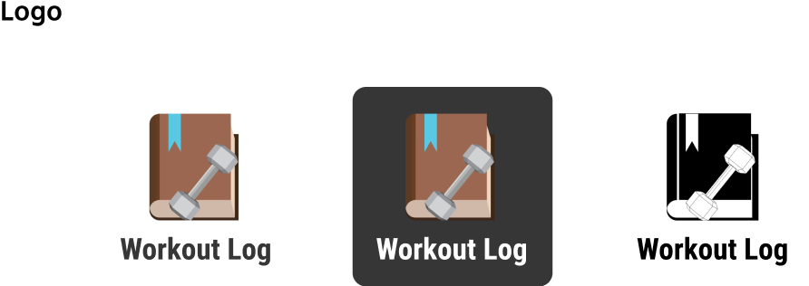

There are several workout applications out ready and available in the market in today’s era. The current user experience of these workout applications only focuses on one specific feature leaving out key features such as tracking day by day, being able to record personal records, and being able to create custom workouts. Workout Log wants to change that by giving users the option to access these key features all in one simple application which will enable users to stay motivated by seeing their day to day progress.
Most adults that utilize workout applications tend to find complications when utilizing their app. With the survey that was conducted, findings found that all users that utilized workout applications found a hard time staying committed and motivated. This also shows another issue that users are having a hard time seeing their progress.
With all the testing that was conducted, I designed several prototypes with the idea to keep the app simple to new users and create an app where users are able to track their workouts on a day to day basis. For this app, I wanted the main focus to be on the aspect of tracking. Key features that I added are a calendar page, which users are able to record and see previously recorded days, personal record page, and a workout routine page. Having access to all of these features in an app will allow users to track their progress easily, staying committed and see personal growth.
I created a user survey to see what types of people utilized workout applications,what those users tend to track the most, and to see what makes users stop using the application. Based on the survey responses, some of the reasons were:
Based off the demographics of the people that have taken the survey,the majority of the survey takers were students followed by people that are employed for wages and self employed. The overall goals of the user surveys were to have the following:
With the results of the survey, I was able to create a competitive analysis that features any type of workout applications. These were the companies that were compared for the competitive analysis:
Differentiators between the three companies that I analyzed, utilized similar functionalities but approached them in different ways. To generate ideas for the product, I wanted my targeted audience to be tailored towards students and employees and self employed people.
Based on the data I have collected from the Survey and the Competitive Analysis I was able to narrow down what type of key features I wanted in my User Stories and who my target audience would be.
I then began to create user personas where I made two different audiences. One of the personas is a student searching for a new workout application that is simple to use and fits his goal in tracking his personal records. The other persona is a self employed user that has never utilized a workout tracker before and hopes that it helps her stay consistent enough to see her progress. With those different perspectives, I then wrote user stories to rank the importance of what a new user might do on a application tailored towards adults that are interested in lifting weights.
After researching and creating completed user stories, I sketched and then mocked up multiple user flows to show how the features would flow within the website. These are some user flow examples and the sitemap.
Mock up of flow chart
Paper prototypes were made to help the early stages of conceptualizing the ideas used in my research. This process helps me brainstorm ideas to visualize the layout of how my application interface will look like before the wireframing.
Utilizing the user flows, I was able to construct how the app would operate and visualize the app would look like. The process of the wireframings help companies understand and communicate consistent visuals and messaging to their audiences.

With the high fidelity mockups I was able to create a usability testing. The testing included two in-person testers and one remote tester. Based on all the responses from the tasks I gave the users, all of the users had an easy time navigating through the application with ease. There were some noticeable flaws when doing the testing such as adding indicators for when users add or delete anything from the featured pages. With that in mind I was able to improve my product by adding those indicators to make a better user experience.
This process helps companies understand and communicate consistent visuals and messaging to their audiences. The brand style guide helps define the Workout Log’s brand elements and how they should be used across all marketing materials.
Workout Log's primary typeface is Roboto Condensed and should be used whenever possible to communicate key brand messages in headlines. Roboto Condensed is accompanied by Hind Madurai for the used of reading long forms of text within Workout Log.
Workout Log's logo uses multiple shades of browns and greys in order to give the journal and dumbbell dimension. The blue book marker is the main primary color of this website and users will be seeing it frequently throughout the application.

Workout Log’s color palette consists of Sky Blue and Yellow . These are the core identity of our brand identity and should appear whenever possible for members to immediately identify our brand.
This the final version of the mobile app. I utilize material design throughout the design process of making the mobile version. A key functionality of the mobile version of this app is the tab feature which allows users to easily move from the calendar page, routine page, and the personal record page. These are the final mockups of the website utilizing the branding style guide and wireframings.
With the high fidelity mockups I was able to create a usability testing. The testing included two in-person testers and one remote tester. Based on all the responses from the tasks I gave the users, all of the users had an easy time navigating through the application with ease. There were some noticeable flaws when doing the testing such as adding indicators for when users add or delete anything from the featured pages. With that in mind I was able to improve my product by adding those indicators to make a better user experience.
In my opinion, there are more features that I could’ve introduced in order to make a more fluid user experience. What works in my design is how the design is easy to navigate and utilizing a simple color palette allows users to identify important features as they navigate through the application. What also works is that the applications gives users the ability to utilize multiple features that help them easily track. If I had more time I would have elaborated more on the personal records page. I feel like giving people more options instead of a single max personal record might be needed and also integrating some type of growth chart would enable users to visually see their growth patterns based on their tracking.
Examples of the user flows